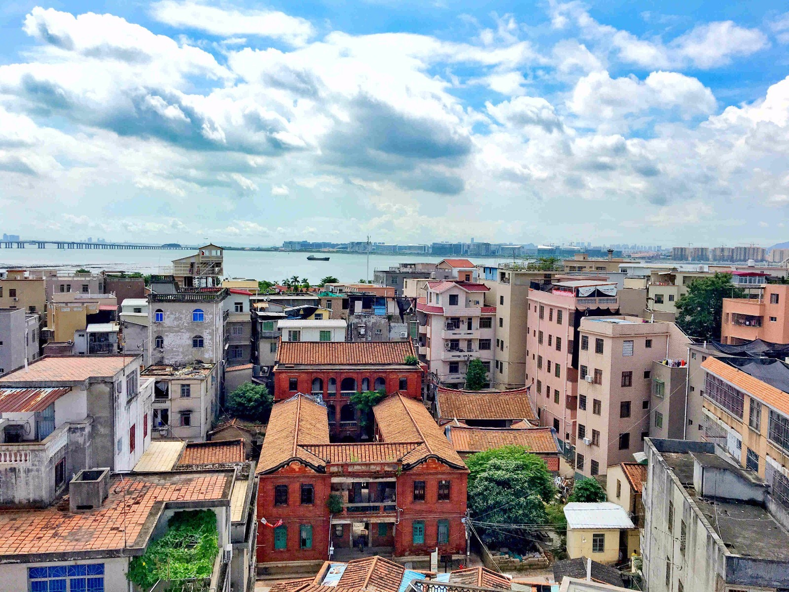
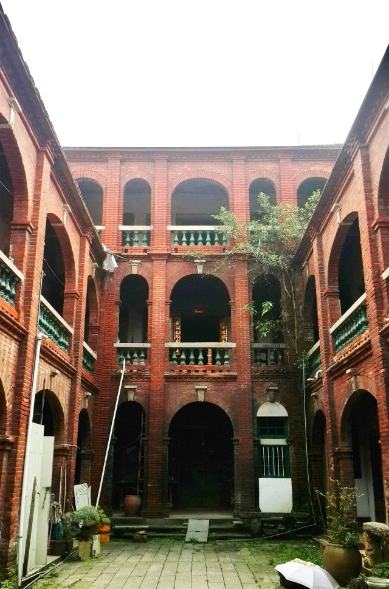
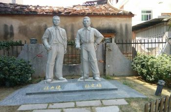

<!DOCTYPE html>
<html lang="en">

<head>
    <meta charset="UTF-8">
    <meta name="viewport" content="width=device-width, initial-scale=1, maximum-scale=1, user-scalable=no">
    <meta http-equiv="X-UA-Compatible" content="ie=edge">
    <meta http-equiv="Content-Security-Policy" content="upgrade-insecure-requests">
    <script type="text/javascript" src="http://api.map.baidu.com/api?v=2.0&ak=XEIpsHRo4dWId5N8wyTVjYhRUBbGIBWA"></script>
    <title>demo</title>

    <style>
        * {
            margin: 0;
            padding: 0;
        }

        body,
        html,
        #allmap {
            width: 100%;
            height: 100%;
            overflow: hidden;
            margin: 0;
            font-family: "微软雅黑";
        }

        #result {
            width: 100%;
            font-size: 12px;
        }

        dl,
        dt,
        dd,
        ul,
        li {
            margin: 0;
            padding: 0;
            list-style: none;
        }

        dt {
            font-size: 14px;
            font-family: "微软雅黑";
            font-weight: bold;
            border-bottom: 1px dotted #000;
            padding: 5px 0 5px 5px;
            margin: 5px 0;
        }

        dd {
            padding: 5px 0 0 5px;
        }

        li {
            line-height: 28px;
        }

        .box-shadow,
        .anchorBL {
            display: none;
        }

        .BMap_Marker img {
            width: 20px;
        }
    </style>
</head>

<body id="container">
    <div id="allmap"></div>

</body>
<script type="text/javascript" src="http://api.map.baidu.com/library/SearchInfoWindow/1.5/src/SearchInfoWindow_min.js"></script>
<link rel="stylesheet" href="http://api.map.baidu.com/library/SearchInfoWindow/1.5/src/SearchInfoWindow_min.css" />
<script src="https://cdn.jsdelivr.net/npm/vue"></script>
<script>
    // 百度地图API功能
    var map = new BMap.Map('allmap');
    var poi = new BMap.Point(118.111231, 24.574938);
    map.centerAndZoom(poi, 18);
    map.enableScrollWheelZoom();

    var data_info = [
        [118.110418, 24.575355, '<div style="margin:0;line-height:20px;padding:2px;">' +
            '<a href="http://blog.sina.cn/dpool/blog/s/blog_74a24f0f0102w3wi.html"></a>' +
            '地址：厦门市集美区鳌园路<br/>电话：0592-6680888<br/>简介： 集美大社位于集美旅游区浔江路和尚南路之间,紧邻集美学村和集美鳌园,是集美发祥之地。' +
            '</div>', "大社"
        ],
        [118.111209, 24.574943, '<div style="margin:0;line-height:20px;padding:2px;">' +
            '<a href="http://news.xmnn.cn/xmnn/2016/09/25/100102145.shtml"></a>' +
            '地址：厦门市集美区祠前路18号<br/>电话：0592-6680883<br/>简介： 建业楼由旅居泰国华侨陈建业、王金霞建于1950年,是集美近代大型洋楼的代表。' +
            '</div>', "集美建业楼"
        ],
        [118.112242, 24.57599, '<div style="margin:0;line-height:20px;padding:2px;">' +
            '<a href="http://blog.sina.cn/dpool/blog/s/blog_66dbee7e0102x09h.html"></a>' +
            '地址：厦门集美浔江路167-1号<br/>电话：0592-6680885<br/>简介：陈文确陈六使陈列馆意在纪念陈文确和陈六使先生的生平事迹，以及其二位的成果业绩。' +
            '</div>', "陈文确陈六使陈列馆"
        ]
    ];


    for (var i = 0; i < data_info.length; i++) {
        var myIcon = new BMap.Icon("./img/green_mark.png", new BMap.Size(20, 40));
        var marker = new BMap.Marker(new BMap.Point(data_info[i][0], data_info[i][1]), {
            icon: myIcon
        });
        // 创建标注
        var content = data_info[i][2];
        // 标题
        var title = data_info[i][3];
        map.addOverlay(marker); // 将标注添加到地图中
        addClickHandler(content, marker, title);
    }

    function addClickHandler(content, marker, title) {
        marker.addEventListener("click", function (e) {
            openInfo(content, e, title)
        });
    }

    function openInfo(content, e, title) {
        var p = e.target;
        var point = new BMap.Point(p.getPosition().lng, p.getPosition().lat);
        // var infoWindow = new BMap.InfoWindow(content, opts); // 创建信息窗口对象 
        // map.openInfoWindow(infoWindow, point); //开启信息窗口
        var searchInfoWindow = null;
        searchInfoWindow = new BMapLib.SearchInfoWindow(map, content, {
            title: title, //标题
            width: 290, //宽度
            height: 105, //高度
            panel: "panel", //检索结果面板
            enableAutoPan: true, //自动平移
            searchTypes: [
                // BMAPLIB_TAB_SEARCH,   //周边检索
                BMAPLIB_TAB_TO_HERE, //到这里去
                BMAPLIB_TAB_FROM_HERE //从这里出发
            ]
        });
        searchInfoWindow.open(point);
    }

    var demo = new Vue({
        el: "#container",
        data: {},
        methods: {}
    });
</script>

</html>